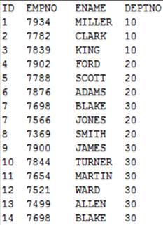
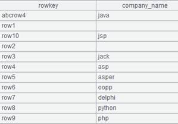

Use index to filter an entity table or a multi-zone composite table according to the filtering condition.
Syntax:
T.icursor(C,¡;w,I)
Note:
The function filters entity table or multi-zone composite table T according to filtering condition w using index I and automatically gets the index if parameter I is absent.
Perform the filtering on each zone table using the corresponding index separately when parameter T is a multi-zone composite table. It is not required that each zone table have the index; perform traversal if one does not have an index.
Parameters:
|
T |
An entity table or a multi-zone table |
|
C |
To-be-retrieved columns in the entity table; get all columns when the parameter is absent |
|
w |
Filtering condition, in which the filtering field for T must be the same as the indexing fiel; support >, >=, <, <=, == and contain in its syntax |
|
I |
Index name; can be omitted |
Options:
|
@s |
Make sure the result set is ordered by the index and large result sets are supported |
|
@u |
Handle multiple conditions joined up with && from left to right while the default is handling them in an optimal order |
Return value:
A single-thread cursor
Example:
|
|
A |
|
|
1 |
=file("D:\\emp1.ctx") |
|
|
2 |
=A1.create(#EID,NAME,DEPT,GENDER) |
Create the composite table¡¯s base table |
|
3 |
=demo.cursor("select EID,NAME,DEPT,GENDER from employee where EID<100") |
|
|
4 |
=A2.append(A3) |
|
|
5 |
=A4.index(test_index,GENDER=="F";DEPT;EID) |
Create an index named test_index |
|
6 |
=A4.icursor(;DEPT=="HR",test_index) |
Use index test_index to get all columns where DEPT is HR and return the result as a cursor |
|
7 |
=A5.fetch() |
Fetch data from the cursor 
|
|
8 |
=A4.icursor@u(;like(DEPT,"*ale*")&&EID>=50,test_index).fetch() |
Handle the multiple conditions connected by && from left to right; use index test_index to find records where DEPT values containing ¡°ale¡± and EID is greater and equal to 50  |
|
9 |
=file("emp.ctx":[2,3]) |
Return a homo-name files group |
|
10 |
=A9.open() |
Open A9¡¯s multi-zone composite table |
|
11 |
=A10.index(index_cp,SALARY>10000;GENDER;) |
Create index index_cp for A10¡¯s multi-zone composite table |
|
12 |
=A10.icursor(;GENDER=="F",index_cp).fetch() |
Use the index to get records where GENDER is F
|